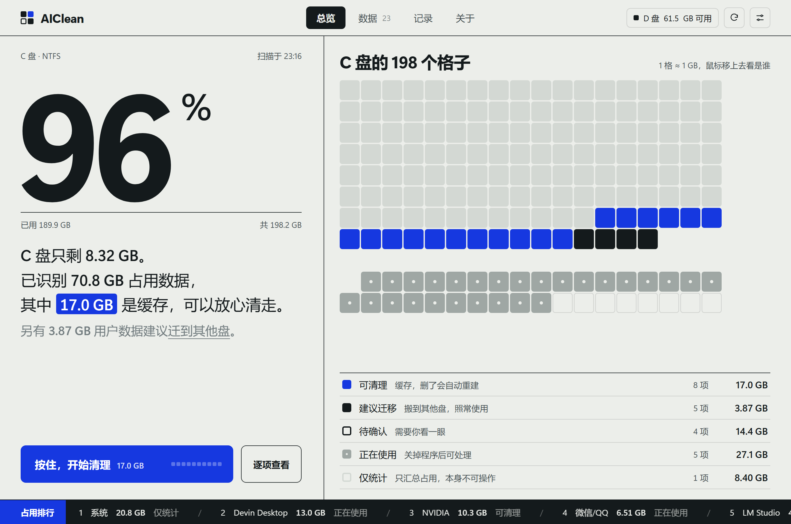
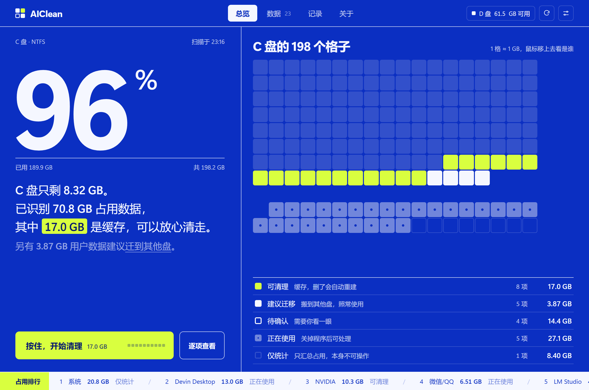

格子地图
整块盘画成一张图，一格约 1 GB。指针停在任意一格，即显示其归属软件与占用大小。
AIClean · Windows C 盘清理工具
扫描整盘占用，画成 198 个格子。缓存按住清理；各家 AI 应用的对话记录、模型文件，原路径迁往其他盘。

全盘扫描后画成 198 个格子，每一格是谁占的、占了多少，都有标注。
缓存按住即清。清理前先查占用，不影响运行中的软件。
AI 应用的对话记录、模型文件等大文件夹迁往其他盘，原位保留链接，随时可迁回。
AIClean 打开即扫描，扫描结果就画成这张图。
这台电脑腾出了 21.1 GB，可用空间从 8.32 GB 变成 29.4 GB
清理前
清理后
这台电脑腾出了 21.1 GB，可用空间从 8.32 GB 变成 29.4 GB
整块盘画成一张图，一格约 1 GB。指针停在任意一格，即显示其归属软件与占用大小。
内置 228 条规则，覆盖各家 AI 应用、开发环境和常见软件的缓存位置；未收录的 Electron 应用自动补查。300 MB 以上大文件单独列出，重复文件按指纹比对。
AI 应用的对话记录、模型文件等大文件夹迁往其他盘，对软件而言路径始终不变。迁移分复制、校验、备份、建链接、验证五步，任何一步出错自动还原。
基于 Windows 计划任务，仅清理低风险缓存，周期自定。开启时会先弹窗列出将清理的内容。
暂时无法删除的文件先进入残留区，可重试、可恢复，逾期自动清除。每一次操作均写入日志。
卸载时一并移除自身创建的内容。选择保留的数据会在桌面生成清单，标明存放位置。
配色 1 / 3
雾白
明亮的日间主题，长时间使用不刺眼。

配色 2 / 3
克莱因蓝
整屏深蓝底，重点信息以荧光黄标出。

配色 3 / 3
夜墨
适合夜间使用。本页右上角三个小方块可同步换色。
直接删除、清空回收站、删除迁移备份均不可恢复，按钮须按住数秒方生效，中途松手即取消。
删除与迁移之前先检测目标是否被程序占用，占用中的跳过，待程序关闭后再处理。
迁移分复制、校验、备份、建链接、验证五步，任一步失败均自动回退，原数据不受损。
删除迁移备份前，先确认链接指向正确、目标数据完整，任一校验不通过则不执行。
首次运行会先弹出使用说明，明确列出不可恢复的操作，阅读后再开始使用。
可操作范围仅限当次扫描出的目录，过程中不会临时增加其他路径。